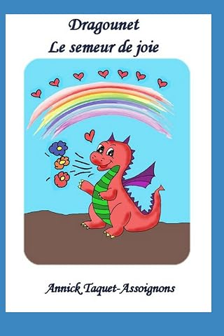
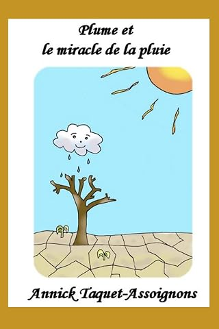
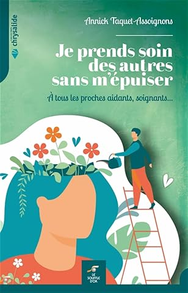
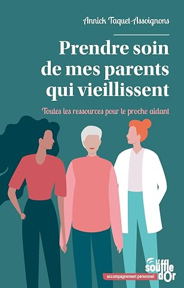
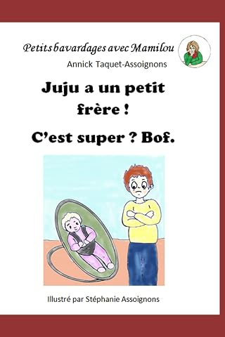
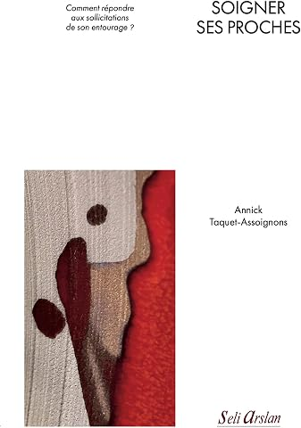
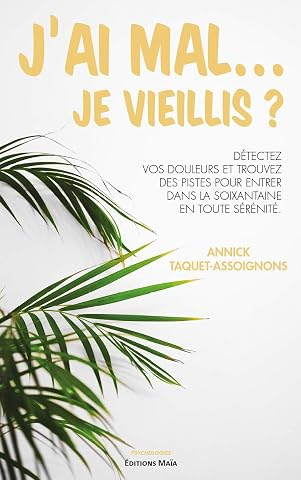
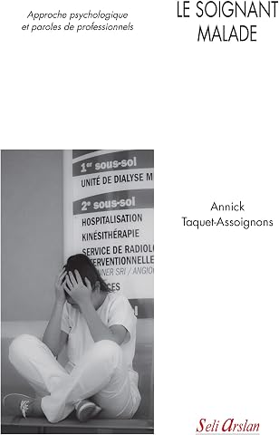

Plume et le miracle de la pluie
Un petit nuage face à la sécheresse : un conte sur l'entraide et la protection de la nature.
Acheter · 9 €Psychologue clinicienne · Autrice
Des albums pour aider les enfants à grandir, et des livres pour celles et ceux qui prennent soin des autres.
11 livres · 3 éditeurs · Citée par la RTBF





Albums illustrés · de 2 à 8 ans
Six albums pour aider les plus petits à mettre des mots sur ce qu'ils vivent : la colère, l'arrivée d'un petit frère, la maladie d'un parent, mais aussi la joie et l'imaginaire. Écrits par une psychologue, à lire ensemble à la maison ou en classe. Trois d'entre eux forment la série « Petit bavardage avec Mamilou » : avec sa grand-mère, l'enfant met des mots sur ce qu'il ressent, et chaque album se termine par quelques petits exercices pour retrouver le calme.
Un petit nuage face à la sécheresse : un conte sur l'entraide et la protection de la nature.
Acheter · 9 €Un dragon qui crache des fleurs : un conte sur la différence, qui peut devenir une force.
Acheter · 9 €Deux petits crabes surmontent leur peur de l'océan, grâce au soutien de leur famille.
Acheter · 9 €Quand un bébé accapare papa et maman : en parler, être rassuré et apprivoiser ses émotions.
Acheter · 8 €Reconnaître sa colère, comprendre d'où elle vient et apprendre à la gérer.
Acheter · 8 €Quand l'enfant se croit responsable de la maladie de son parent, et n'ose pas en parler.
Acheter · 8 €Ce qu'elle transmet · La forêt intérieure
Chacun porte une forêt en soi.
Aider, c'est parfois couper un arbre pour l'offrir.
À force, la forêt se dégarnit : c'est l'épuisement.
Prendre soin de soi, c'est la laisser repousser.
Un exercice de ses livres
Partagez votre temps et votre énergie en quatre parts, puis regardez honnêtement la place que prend chacune. Rien n'est enregistré : c'est pour vous seulement.
Les bonnes questions
Prendre soin de soi n'a rien d'égoïste.
Bibliographie · 2018 – 2025
Cinq ouvrages pour les adultes, du plus récent au plus ancien, publiés chez Seli Arslan, Le Souffle d'Or et les Éditions Maïa.

Comment répondre quand la famille et les amis sollicitent le soignant pour leurs soucis de santé ? Un guide pour les étudiants et les professionnels, qui aide à garder la bonne distance dans ces situations singulières.
Toutes les ressources pour le proche aidant : accueil de jour, répit, hébergement temporaire, mais aussi la culpabilité et la fatigue. Chaque chapitre se termine par une pause « Et vous, où en êtes-vous ? ».
Pour les soignants, les proches aidants et les personnes naturellement tournées vers les autres. Le « syndrome du sauveur », la fatigue de compassion, et des exercices pour continuer à aider sans s'y perdre.

Douleurs physiques, psychologiques, sociales et spirituelles à l'approche de la soixantaine. Un tour d'horizon nourri de témoignages, abordé avec douceur et optimisme.

Quand le soignant tombe malade, ou un collègue. Des témoignages de professionnels de tous statuts, analysés sous l'angle de l'attachement, de la perte, de l'identité professionnelle et du retour au travail.
Biographie
Née en Belgique, Annick Taquet-Assoignons est psychologue clinicienne. Elle a consacré une grande partie de sa carrière à l'accompagnement en cancérologie, puis aux personnes âgées et aux équipes soignantes.
Elle exerce aujourd'hui en cabinet et enseigne la psychologie, notamment auprès des futurs infirmiers. Elle participe régulièrement à des salons et rencontres littéraires, en particulier en région PACA.
Dernier chapitre
Les livres se trouvent en librairie, chez les éditeurs et en ligne. Et Annick aime aller à la rencontre de ses lecteurs.
Votre libraire peut aussi commander n'importe quel titre.
Pour un salon du livre, une séance de dédicaces, une intervention auprès d'étudiants infirmiers ou une rencontre sur l'épuisement des soignants et des proches aidants.
Lui écrire sur Facebook →Prochaines dédicaces, nouveaux livres et rencontres sont annoncés sur ses réseaux.
Dans la presse
En janvier 2023, la RTBF a consacré un article à ses conseils pour sortir du « syndrome du sauveur ». Lire l'article
Merci de votre lecture.